EdoxabanParameterScan
Models
Datasets
Figures
- timecourse__pk__bodyweight_scan: EdoxabanParameterScan_timecourse__pk__bodyweight_scan.svg
- timecourse__pk__hepatic_scan: EdoxabanParameterScan_timecourse__pk__hepatic_scan.svg
- timecourse__pk__renal_scan: EdoxabanParameterScan_timecourse__pk__renal_scan.svg
- timecourse__pk__dose_scan: EdoxabanParameterScan_timecourse__pk__dose_scan.svg
- timecourse__pk__food_scan: EdoxabanParameterScan_timecourse__pk__food_scan.svg
- pk_bodyweight_scan: EdoxabanParameterScan_pk_bodyweight_scan.svg
- pk_hepatic_scan: EdoxabanParameterScan_pk_hepatic_scan.svg
- pk_renal_scan: EdoxabanParameterScan_pk_renal_scan.svg
- pk_dose_scan: EdoxabanParameterScan_pk_dose_scan.svg
- pk_food_scan: EdoxabanParameterScan_pk_food_scan.svg
- pd_bodyweight_scan: EdoxabanParameterScan_pd_bodyweight_scan.svg
- pd_hepatic_scan: EdoxabanParameterScan_pd_hepatic_scan.svg
- pd_renal_scan: EdoxabanParameterScan_pd_renal_scan.svg
- pd_dose_scan: EdoxabanParameterScan_pd_dose_scan.svg
- pd_food_scan: EdoxabanParameterScan_pd_food_scan.svg
{kind=link}
{kind=link}
{kind=link}
{kind=link}
{kind=link}
{kind=link}
{kind=link}
{kind=link}
{kind=link}
{kind=link}
{kind=link}
{kind=link}
{kind=link}
timecourse__pk__bodyweight_scan
| 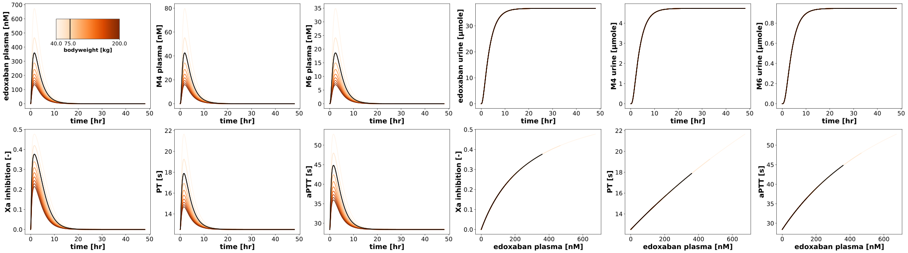 |
timecourse__pk__hepatic_scan
| 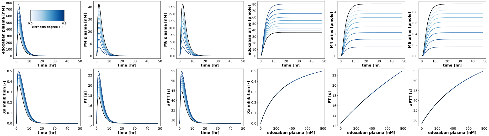 |
timecourse__pk__renal_scan

|
timecourse__pk__dose_scan
| 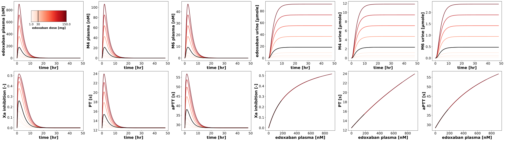 |
timecourse__pk__food_scan
| 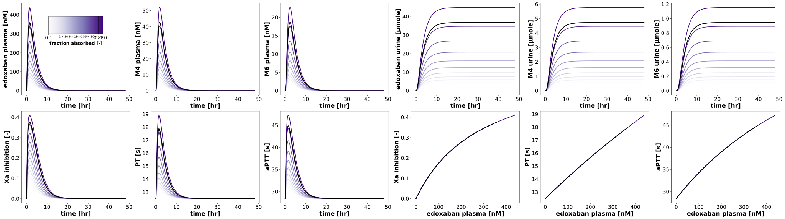 |
pk_bodyweight_scan
| 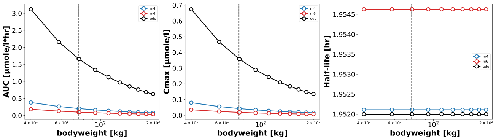 |
pk_hepatic_scan
| 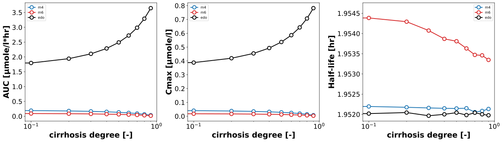 |
pk_renal_scan
| 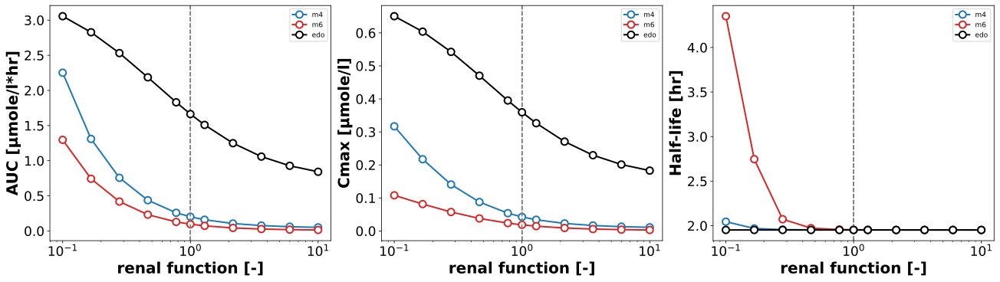 |
pk_dose_scan
| 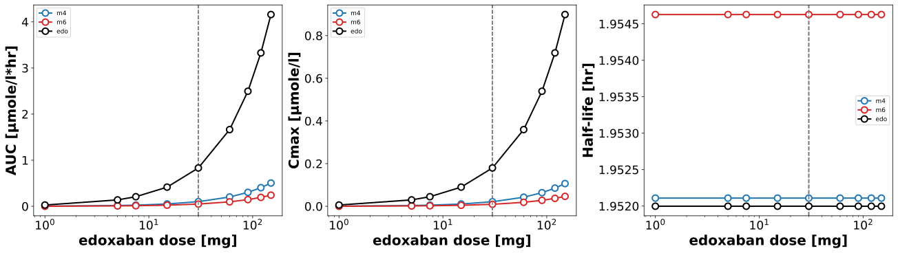 |
pk_food_scan

|
pd_bodyweight_scan
| 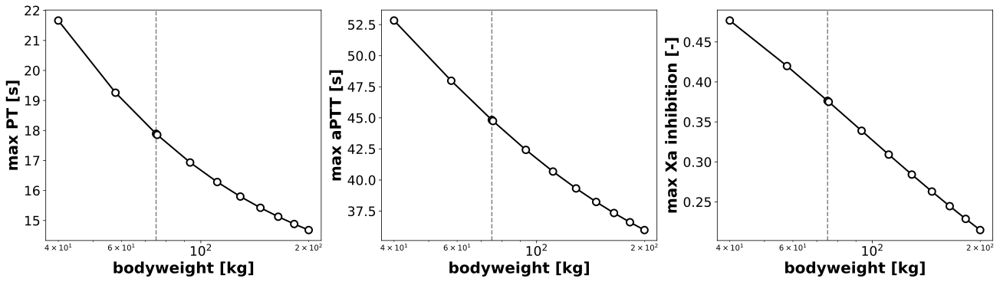 |
pd_hepatic_scan
| 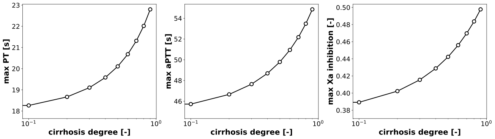 |
pd_renal_scan
| 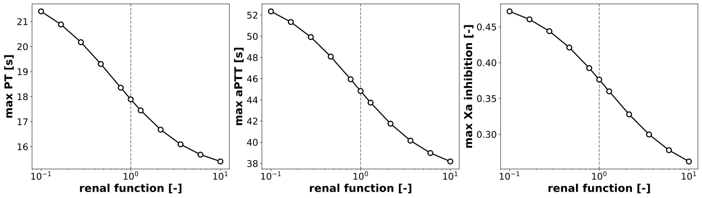 |
pd_dose_scan
| 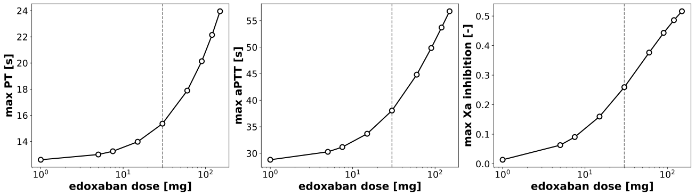 |
pd_food_scan
| 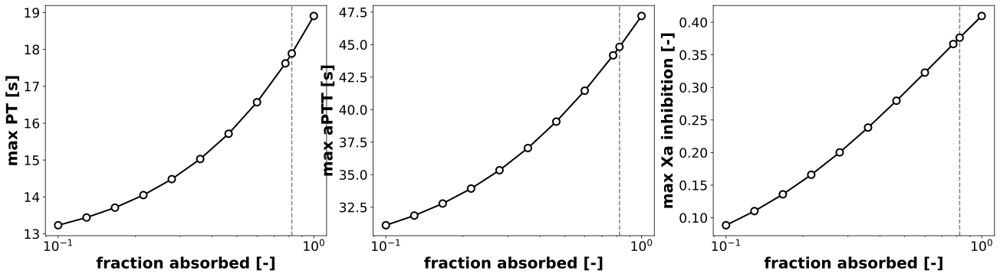 |
Code
../../../../src/pkdb_models/models/edoxaban/experiments/scans/scan_parameters.py
"""Parameter scans edoxaban."""
from typing import Dict
import matplotlib.axes
import matplotlib.cm as cm
import numpy as np
from sbmlsim.simulation import Timecourse, TimecourseSim, ScanSim, Dimension
from sbmlsim.plot.serialization_matplotlib import FigureMPL, MatplotlibFigureSerializer
from sbmlsim.plot.serialization_matplotlib import plt
from sbmlutils.console import console
from pkdb_models.models.edoxaban.experiments.base_experiment import (
EdoxabanSimulationExperiment,
)
from pkdb_models.models.edoxaban.helpers import run_experiments
class EdoxabanParameterScan(EdoxabanSimulationExperiment):
"""Scan the effect of parameters on pharmacokinetics."""
font = {"weight": "bold", "size": 20}
tick_font_size = 17
tend = 48 * 60
steps = 2000
dose_edo = 60 # [mg]
num_points = 10
scan_map = {
"bodyweight_scan": {
"parameter": "BW",
"default": 75.0,
"range": np.sort(
np.append(np.linspace(40, 200, num=num_points), [75.0])
),
# "range": np.logspace(-2, 2, num=21),
"scale": "linear",
"colormap": "Oranges",
"units": "kg",
"label": "bodyweight [kg]",
},
"hepatic_scan": {
"parameter": "f_cirrhosis",
"default": 0.0,
"range": np.linspace(0, 0.9, num=num_points),
# "range": np.logspace(-2, 2, num=21),
"scale": "linear",
"colormap": "Blues",
"units": "dimensionless",
"label": "cirrhosis degree [-]",
},
"renal_scan": {
"parameter": "KI__f_renal_function",
# "range": np.linspace(0.1, 1.9, num=num_points),
"default": 1.0,
"range": np.sort(
np.append(np.logspace(-1, 1, num=num_points), [1.0])
), # [10^-1=0.1, 10^1=10]
"scale": "log",
"colormap": "Greens_r",
"units": "dimensionless",
"label": "renal function [-]",
},
"dose_scan": {
"parameter": "PODOSE_edo",
"default": 30,
"range": np.sort(
# np.append(np.linspace(1, 100, num=num_points), [10])
[1, 5, 7.5, 15, 30, 60, 90, 120, 150]
), # [10^-1=0.1, 10^1=10]
# "range": np.sort(
# np.append(np.logspace(1, 2, num=num_points), [50])
# ), # [10^-1=0.1, 10^1=10]
"scale": "linear",
"colormap": "Reds",
"units": "mg",
"label": "edoxaban dose [mg]",
},
"food_scan": {
"parameter": "GU__F_edo_abs",
# "range": np.linspace(0.1, 1.9, num=num_points),
"default": 0.82,
"range": np.sort(
np.append(np.logspace(-1, 0, num=num_points), [0.82])
), # [10^-1=0.1, 10^1=10]
"scale": "log",
"colormap": "Purples",
"units": "dimensionless",
"label": "fraction absorbed [-]",
},
}
def simulations(self) -> Dict[str, ScanSim]:
Q_ = self.Q_
tcscans = {}
for scan_key, scan_data in self.scan_map.items():
tcscans[f"scan_po_{scan_key}"] = ScanSim(
simulation=TimecourseSim(
Timecourse(
start=0,
end=self.tend,
steps=self.steps,
changes={
**self.default_changes(),
"PODOSE_edo": Q_(self.dose_edo, "mg"),
},
)
),
dimensions=[
Dimension(
"dim_scan",
changes={
scan_data["parameter"]: Q_(
scan_data["range"], scan_data["units"]
)
},
),
],
)
return tcscans
def figures_mpl(self) -> Dict[str, FigureMPL]:
"""Matplotlib figures."""
# calculate pharmacokinetic parameters
self.pk_dfs = self.calculate_edoxaban_pk()
self.pd_dfs = self.calculate_edoxaban_pd()
return {
**self.figures_mpl_timecourses(),
**self.figures_mpl_pharmacokinetics(),
**self.figures_mpl_pharmacodynamics(),
}
def figures_mpl_timecourses(self) -> Dict[str, FigureMPL]:
"""Timecourse plots."""
figures = {}
for scan_key, scan_data in self.scan_map.items():
range = scan_data["range"]
rmin, rmax = range[0], range[-1]
# cmap_str
cmap_str = scan_data["colormap"]
cmap = matplotlib.colormaps.get_cmap(cmap_str)
# -----------------------------------
# pharmacokinetics & pharmacodynamics
# -----------------------------------
sids = [
("time", "[Cve_edo]"),
("time", "[Cve_m4]"),
("time", "[Cve_m6]"),
("time", "Aurine_edo"),
("time", "Aurine_m4"),
("time", "Aurine_m6"),
("time", "Xa_inhibition"),
("time", "PT"),
("time", "aPTT"),
("[Cve_edo]", "Xa_inhibition"),
("[Cve_edo]", "PT"),
("[Cve_edo]", "aPTT"),
]
f, axes = plt.subplots(
nrows=2,
ncols=6,
figsize=(6 * 6, 5 * 2),
dpi=300,
layout="constrained"
)
ymax = {}
for ksid, (xid, yid) in enumerate(sids):
ymax[yid] = 0.0
ax = axes.flatten()[ksid]
# get data
Q_ = self.Q_
xres = self.results[
f"task_scan_po_{scan_key}"
]
# scanned dimension
scandim = xres._redop_dims()[0]
parameter_id = scan_data["parameter"]
par_vec = Q_(
xres[parameter_id].values[0], xres.uinfo[parameter_id]
)
for k_par, par in enumerate(par_vec):
x_vec = Q_(
xres[xid].sel({scandim: k_par}).values,
xres.uinfo[xid],
).to(self.units[xid])
y_vec = Q_(
xres[yid].sel({scandim: k_par}).values,
xres.uinfo[yid],
).to(self.units[yid])
# update ymax
cmax = np.nanmax(y_vec.magnitude)
if cmax > ymax[yid]:
ymax[yid] = cmax
# 0.1 - 1.9
linewidth = 2.0
if np.isclose(scan_data["default"], par.magnitude):
color = "black"
x_vec_default = x_vec
y_vec_default = y_vec
else:
# red less function, blue more function
if scan_data["scale"] == "linear":
cvalue = (par.magnitude - rmin)/np.abs(rmax-rmin)
elif scan_data["scale"] == "log":
cvalue = (np.log10(par.magnitude) - np.log10(rmin)) / np.abs(np.log10(rmax) - np.log10(rmin))
color = cmap(cvalue)
ax.plot(
x_vec.magnitude,
y_vec.magnitude,
color=color,
linewidth=linewidth,
)
# plot the reference line in black
ax.plot(
x_vec_default.magnitude,
y_vec_default.magnitude,
color="black",
linewidth=2.0,
)
ax.set_xlabel(
f"{self.labels[xid]} [{self.units[xid]}]",
fontdict=self.font,
)
ax.set_ylabel(
f"{self.labels[yid]} [{self.units[yid].replace('dimensionless', '-')}]",
fontdict=self.font,
)
ax.tick_params(axis="x", labelsize=self.tick_font_size)
ax.tick_params(axis="y", labelsize=self.tick_font_size)
# --- colorbar ---
# 4-tuple of floats rect = (left, bottom, width, height).
# A new Axes is added with dimensions rect in normalized (0, 1)
cb_ax = f.add_axes(rect=[0.06, 0.85, 0.07, 0.08])
cb_ax.set_in_layout(True)
# colorbar range
if scan_data["scale"] == "linear":
norm = matplotlib.colors.Normalize(vmin=rmin, vmax=rmax, clip=False)
elif scan_data["scale"] == "log":
norm = matplotlib.colors.LogNorm(vmin=rmin, vmax=rmax, clip=False)
cbar = f.colorbar(
cm.ScalarMappable(norm=norm, cmap=cmap_str),
cax=cb_ax,
orientation="horizontal",
)
# label
cbar.ax.set_xlabel(
scan_data["label"], **{"size": 15, "weight": "bold"}
)
cbar.ax.axvline(x=scan_data["default"], color="black", linewidth=2)
# ticks
ticks = [rmin, rmax]
if scan_data["default"] not in ticks:
ticks.append(scan_data["default"])
ticks = sorted(ticks)
console.print(ticks)
cbar.set_ticks(ticks)
cbar.set_ticklabels(
ticks, **{"size": 15, "weight": "medium"}
)
figures[f"timecourse__pk__{scan_key}"] = f
return figures
def figures_mpl_pharmacokinetics(self):
"""Visualize dependency of pharmacokinetics parameters."""
Q_ = self.Q_
figures = {}
parameters_info = {
"m4": [
"aucinf",
"cmax",
# "kel",
"thalf",
# "cl_renal",
# "Aurine_eat",
],
"m6": [
"aucinf",
"cmax",
# "kel",
"thalf",
# "cl_renal",
# "Aurine_eat",
],
"edo": [
"aucinf",
"cmax",
# "kel",
# "vd",
"thalf",
# "cl",
# "cl_hepatic",
# "cl_renal",
# "cl_fecal",
],
}
colors = {
"edo": "black",
"m4": "tab:blue",
"m6": "tab:red",
}
for scan_key, scan_data in self.scan_map.items():
parameters = parameters_info["edo"]
f, axes = plt.subplots(
nrows=1, ncols=len(parameters), figsize=(6 * len(parameters), 5), dpi=300,
layout="constrained"
)
# f.suptitle(
# f"{names[substance]}",
# fontsize=self.suptitle_font_size,
# )
axes = axes.flatten()
for substance, parameters in parameters_info.items():
for k, pk_key in enumerate(parameters):
ax = axes[k]
ax.axvline(x=scan_data["default"], color="grey", linestyle="--")
ymax = 0.0
sim_key = f"scan_po_{scan_key}"
xres = self.results[f"task_{sim_key}"]
df = self.pk_dfs[sim_key]
df = df[df.substance == substance] # get PK for substance
# This was scanned
parameter_id = scan_data["parameter"]
x_vec = Q_(
xres[parameter_id].values[0], xres.uinfo[parameter_id]
)
pk_vec = df[f"{pk_key}"]
pk_vec = pk_vec.to_numpy()
x = x_vec
y = Q_(pk_vec, df[f"{pk_key}_unit"].values[0])
y = y.to(self.pk_units[pk_key])
ax.plot(
x,
y,
marker="o",
linestyle="-",
linewidth=2.0,
color=colors[substance],
markeredgecolor=colors[substance],
markeredgewidth=2.0,
markerfacecolor="white",
markersize=9,
label=f"{substance}",
)
ymax_value = np.nanmax(y.magnitude)
if ymax_value > ymax:
ymax = ymax_value
# ax.set_xlabel(scan_data["label"], fontdict=EnalaprilSimulationExperiment.scan_font)
ax.set_xlabel(
scan_data["label"],
fontdict=self.font,
)
ax.set_ylabel(
f"{self.pk_labels[pk_key]} [{self.pk_units[pk_key]}]",
fontdict=self.font,
)
ax.tick_params(
axis="x", labelsize=self.tick_font_size
)
ax.tick_params(
axis="y", labelsize=self.tick_font_size
)
# set axis
# ax.set_ylim(bottom=0.0, top=1.05 * ymax)
# ax.set_ylim(bottom=0.0)
ax.set_xscale("log")
ax.legend(fontsize=EdoxabanSimulationExperiment.legend_font_size)
figures[f"pk_{scan_key}"] = f
return figures
def figures_mpl_pharmacodynamics(self):
"""Visualize dependency of pharmacodynamic parameters."""
Q_ = self.Q_
figures = {}
parameters = {
"PT": "max",
"aPTT": "max",
"Xa_inhibition": "max",
}
for scan_key, scan_data in self.scan_map.items():
f, axes = plt.subplots(
nrows=1, ncols=3, figsize=(6 * 3, 5), dpi=300,
layout="constrained"
)
axes = axes.flatten()
for k, sid in enumerate(parameters):
pd_key = parameters[sid]
ax = axes[k]
ax.axvline(x=scan_data["default"], color="grey", linestyle="--")
ymax = 0.0
sim_key = f"scan_po_{scan_key}"
xres = self.results[f"task_{sim_key}"]
dfs = self.pd_dfs[sim_key]
df = dfs[sid] # get PD for sid
# This was scanned
parameter_id = scan_data["parameter"]
x_vec = Q_(
xres[parameter_id].values[0], xres.uinfo[parameter_id]
)
pd_vec = df[f"{pd_key}"]
pd_vec = pd_vec.to_numpy()
x = x_vec
y = Q_(pd_vec, df[f"unit"].values[0])
y = y.to(self.units[sid])
ax.plot(
x,
y,
marker="o",
linestyle="-",
linewidth=2.0,
color="black",
markeredgecolor="black",
markeredgewidth=2.0,
markerfacecolor="white",
markersize=9,
)
ymax_value = np.nanmax(y.magnitude)
if ymax_value > ymax:
ymax = ymax_value
# ax.set_xlabel(scan_data["label"], fontdict=EnalaprilSimulationExperiment.scan_font)
ax.set_xlabel(
scan_data["label"],
fontdict=self.font,
)
ax.set_ylabel(
f"{pd_key} {self.labels[sid]} [{self.units[sid].replace('dimensionless', '-')}]",
fontdict=self.font,
)
ax.tick_params(
axis="x", labelsize=self.tick_font_size
)
ax.tick_params(
axis="y", labelsize=self.tick_font_size
)
# set axis
# ax.set_ylim(bottom=0.0, top=1.05 * ymax)
# ax.set_ylim(bottom=0.0)
ax.set_xscale("log")
# ax.legend(fontsize=RivaroxabanSimulationExperiment.legend_font_size)
figures[f"pd_{scan_key}"] = f
return figures
if __name__ == "__main__":
run_experiments(EdoxabanParameterScan, output_dir=EdoxabanParameterScan.__name__)